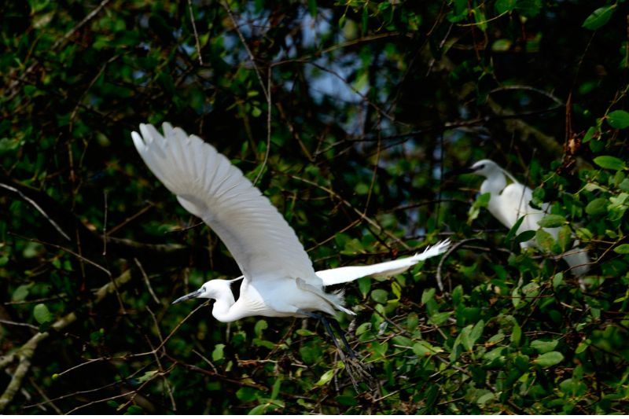
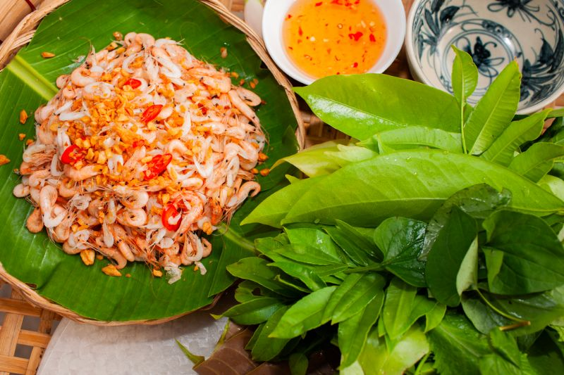

Sân chim Vàm Hồ là địa điểm du lịch Bến Tre thu hút đông đảo các bạn gần xa dừng chân tham quan, khám phá. Không chỉ sở hữu diện tích rộng lớn, nơi đây còn gây ấn tượng bởi hệ sinh thái phong phú, đa dạng. Vàm Hồ sẽ là chốn dừng chân lý tưởng dành cho bạn muốn hòa mình vào thiên nhiên tươi đẹp.
Bên cạnh vườn sinh thái Hoa Vương, Sân chim Vàm Hồ là điểm dừng chân không còn xa lạ gì với tín đồ du lịch thập phương. Sở hữu diện tích trải dài qua 3 xã: Mỹ Hòa, Tân Mỹ và Tân Xuân, sân chim lớn nhất tỉnh Bến Tre này gây ấn tượng bởi hệ sinh thái vô cùng đặc sắc. Từ cánh rừng xanh bạt ngàn đến những đàn chim chao cánh bay lượn, thiên nhiên kỳ thú nơi đây luôn biết cách níu chân người lữ hành.
Nếu lên kế hoạch du lịch Bến Tre nói chung và ghé tham quan Vàm Hồ nói riêng, mọi người nên thu xếp đi vào mùa chim bắt đầu tụ tập sinh sản, tức khoảng thời gian từ tháng 10 tới tháng 4 năm sau. Lúc này dựa vào tập tính vẫn giữ nguyên hàng chục năm qua, vô số loài chim cò sẽ đậu nặng trĩu trên các ngọn đước, bần, mắm... và soi bóng mình dưới dòng sông Ba Lai hiền hòa, mang đến bạn cảnh quan đẹp tựa tranh vẽ.
Giá vé: 150.000 VNĐ/khách (bao gồm hướng dẫn viên tham quan rừng).
Giờ mở cửa: 24/24 tất cả các ngày trong tuần.
Địa chỉ: Xã Mỹ Hòa - Tân Mỹ - Tân Xuân, huyện Ba Tri, tỉnh Bến Tre
Cách di chuyển: Sân chim Vàm Hồ thuộc địa phận huyện Ba Tri có vị trí cách Thành phố Bến Tre khoảng 35km, mất gần 1 giờ đồng hồ di chuyển. Nếu đón xe khách đi Bến Tre từ Sài Gòn, sau khi dừng chân tại trung tâm thành phố, bạn có thể thuê xe máy hoặc bắt taxi tới thẳng điểm tham quan. Nhìn chung, cung đường di chuyển đến Vàm Hồ khá dễ đi. Mọi người chỉ cần chạy dọc đường Huỳnh Tấn Phát qua ĐH173 rồi men theo con sông Ba Lai hướng đi Chợ Tân Mỹ là tới được Sân chim Vàm Hồ. Nếu là lần đầu du lịch, ở những khúc cua, bạn có thể kết hợp hỏi thăm người dân địa phương để tránh bị lạc.
Sân chim Vàm Hồ nằm bên bờ hữu ngạn sông Ba Lai thuộc địa phận các xã Mỹ Hòa, Tân Mỹ và Tân Xuân của huyện Ba Tri. Nơi đây gây ấn tượng bởi diện tích lên đến 67ha cùng đặc điểm tự nhiên mang đậm dấu ấn rừng ngập mặn ven biển. Sở hữu hệ sinh thái đa dạng, phong phú, thiên nhiên Vàm Hồ được đánh giá cao về giá trị sinh học cũng như tiềm năng phát triển du lịch sinh thái.
Nhờ vào độ cao trung bình 1,25m so với mực nước biển nên Sân chim Vàm Hồ là vùng đất ngập mặn an toàn với triều cường. Thảm thực vật nơi đây ở tầng cao có dừa nước, chà là, đước, mắm tạo môi trường sống lý tưởng cho các loài chim, trong khi tầng thấp gồm các loài cây như đước bôi, bụp tra, ô rô, cóc kèn, lau sậy... rất thích hợp để cò, vạc làm tổ sinh sản. Không dừng lại ở đó, hệ thống kênh rạch chằng chịt còn mang đến Vàm Hồ nguồn tôm, cá cực kì trù phú.
Có thể nói, từ những đặc điểm về thiên nhiên kể trên mà nơi đây sở hữu cho mình hơn 120 loài chim quý hiếm khác nhau. Từ cò, vạc đến cồng cộc, diệc xám, quắm trắng... tất cả đều có mặt tại sân chim rộng lớn này cùng nhiều loại thú hoang dã. Tín đồ du lịch khi có dịp dừng chân tại Vàm Hồ thường không khỏi choáng ngợp, thích thú trước cảnh quan hoang sơ, huyền bí, chốc chốc lại thấy chim sa, cá lặn nơi đây.
. Sân chim Vàm Hồ là một điểm du lịch sinh thái đa dạng với nhiều hoạt động thú vị. Du khách có thể tham gia chuyến xuồng chèo qua rừng ngập mặn Bến Tre, nơi tiếng chim rộn ràng giữa không gian thiên nhiên hoang dã, đồng thời tìm hiểu về khu căn cứ kháng chiến lịch sử. Các hoạt động giải trí như ngả lưng trên võng dưới tán cây, tham gia trò chơi dân gian như đi cầu khỉ, đạp xích lô mini hay chơi đánh đu sẽ mang đến trải nghiệm thư giãn, vui vẻ.
Sân chim Vàm Hồ còn nổi bật với khu vực trồng cây ăn trái quanh năm. Bạn có thể thoải mái tham quan, khám phá và thưởng thức các loại trái cây tươi ngon ngay tại vườn, như bưởi, mít, đu đủ, mãng cầu xiêm... Những trái cây này chín mọng, tỏa hương thơm ngào ngạt khiến ai ghé thăm đều không thể cưỡng lại.
Ngoài ra, nhà hàng trong khuôn viên sân chim phục vụ các món đặc sản của vùng như lẩu bần, cá kho nồi đất, mắm tép thịt ba chỉ cùng các loại bánh dân gian. Các món ăn này sẽ làm hài lòng những tín đồ ẩm thực yêu thích các hương vị truyền thống.
Cuối ngày, bạn không thể bỏ qua cảnh hoàng hôn bên sông Ba Lai. Hàng ngàn con chim bay về sau một ngày kiếm ăn, tạo nên một khung cảnh thiên nhiên hùng vĩ và đẹp mắt, hòa cùng tiếng gọi của đàn vạc và ánh chiều tà nhuộm sắc cam rực rỡ. Đây là thời khắc lý tưởng để cảm nhận vẻ đẹp tuyệt vời của Sân chim Vàm Hồ.
Ghé thăm Sân chim Vàm Hồ, bên cạnh nghỉ ngơi, thư giãn và hòa mình thiên nhiên tràn đầy sức sống, bạn còn có cơ hội tham gia vô số hoạt động du lịch thú vị. Gây ấn tượng nhất trong số đó là các trò chơi dân gian như đi cầu khỉ, đạp xích lô mini, chơi đánh đu...
Với nhiều hoạt động vui chơi giải trí đặc sắc kết hợp khám phá thiên nhiên kỳ thú, Vàm Hồ thường được người dân bản địa và tín đồ xê dịch chọn làm điểm dừng chân cho các chuyến du lịch khám phá hay team building
Trải nghiệm các trò chơi nhân gian
Vui chơi thỏa thích rồi, sao có thể bỏ qua cơ hội trải nghiệm đa dạng món ăn địa phương thơm ngon khó cưỡng như lẩu bần, cá kho nồi đất, mắm tép... tại khu vực nhà hàng trong khuôn viên Khu du lịch Vàm Hồ bạn nhỉ